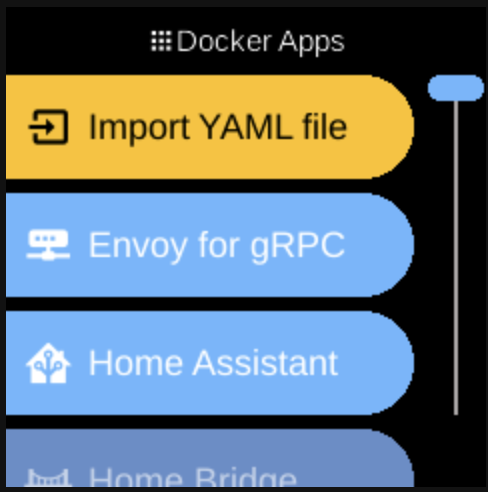

Apps
Ubo App
Home screen actions → Menu → Apps

Apps (Docker Apps ) lists applications running in Docker on your Ubo device. Open it from the Menu on the home screen.
What you see
When you open Docker Apps, the list can include:
- Import YAML file () — Always shown first. Opens a flow to add a custom Docker composition by providing or importing a
docker-compose.ymlfile. Shown with a warning-style (orange) label. - Docker app entries — One entry per Docker container or composition registered on the device (e.g. Home Assistant, Pi-hole, or compositions you imported). Tapping an entry opens that app’s menu (fetch, start, stop, remove, etc.). Order among these is stable (by key).
- File System () — Opens the file browser so you can select and open files or paths on the device. Not a Docker app; it is a built-in app that appears in the same list (see File System in Services).
If no Docker app has been registered yet, you still see Import YAML file and File System. The placeholder No apps is used only when the list has no items (e.g. before services have finished loading). The screen title is Docker Apps.
Built-in options (always in the list)
- Import YAML file — Add a custom Docker composition. You can paste or provide a
docker-compose.yml(e.g. from a QR code or Web UI). The composition is stored on the device and appears as a new Docker app entry once added. Shown first in the list. - File System — Open the file path selector to browse and open files or folders on the device. Used when another feature asks you to choose a path. See File System for more. Appears after all Docker app entries in the list.
Available Docker apps
These are the predefined Docker container and composition apps that can appear as entries in the Docker Apps list. Each is registered when the Docker service is available; the exact set may depend on your device and configuration. You may also see imported apps (compositions you added via Import YAML file). Tapping an entry opens that app’s menu (fetch, start, stop, remove, etc.):
- Envoy for gRPC — gRPC proxy for Ubo stack.
- Home Assistant — Home automation platform (port 8123).
- Home Bridge — Apple HomeKit bridge for non–HomeKit devices.
- Immich — Self-hosted photo and video backup (port 2283).
- Ngrok — Expose local services via secure tunnels (requires auth token).
- Ollama — Local LLM runtime (port 11434).
- Open WebUI — Web UI for chatting with local LLMs (port 8080; uses Ollama).
- Pi-hole — Network-wide ad blocker and DNS (pi.hole; default password: admin).
- Portainer — Docker container management UI.
Navigation
- Use UP and DOWN to move between apps.
- Use L1, L2, or L3 to select the first, second, or third item on the screen.
- Use BACK to return to the main menu or the home screen.
- Use HOME to go to the home screen.
Apps are managed via Docker; the list reflects what is currently available on the device.